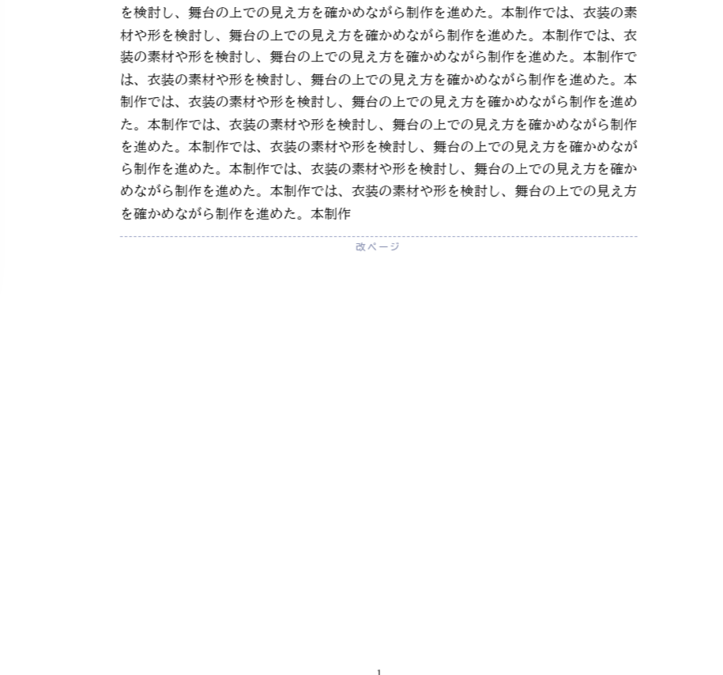
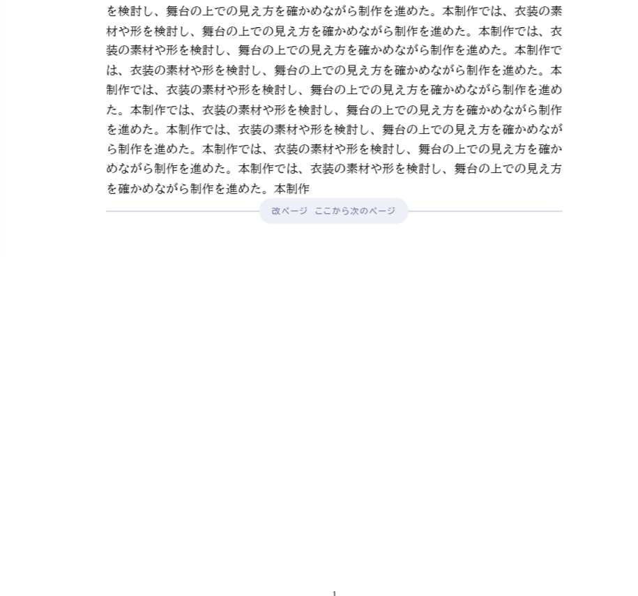
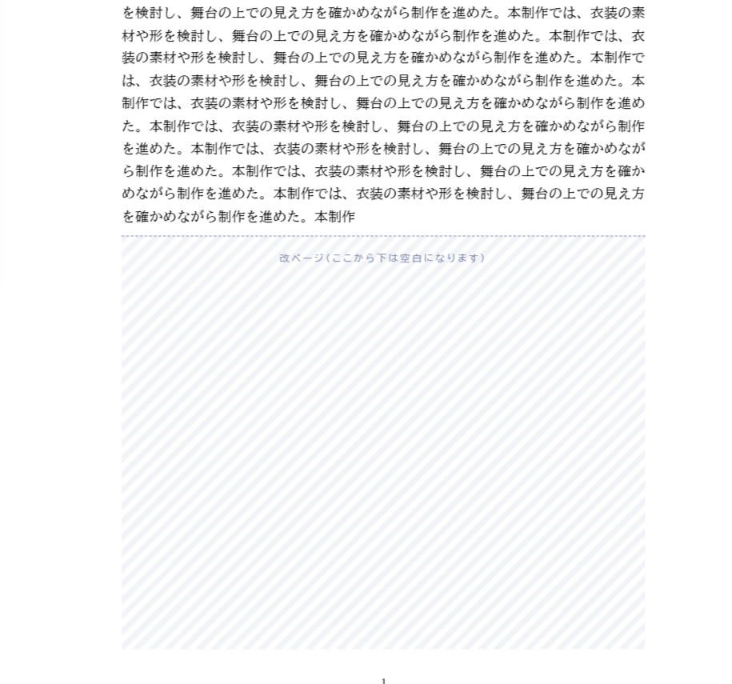

学生が入れた改ページの印（画面だけ。PDF には出ません）
本文の途中に改ページを入れ、後ろの小見出しを次のページから始めた例です。印をクリックすると選べて、道具の「削除」で消せます（どの案も同じ）。
案A 点線と文字Word の編集記号のように、点線と「改ページ」の文字だけを出す。控えめ
案B 線の上に札細い線の中央に「改ページ ここから次のページ」の札を出す。何の印かがすぐわかる
案C 空白になるところに斜線改ページより下（PDF で空白になるところ）を薄い斜線で示す。空きの大きさがひと目でわかる